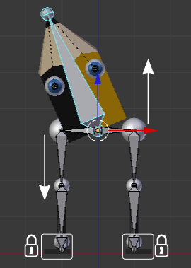
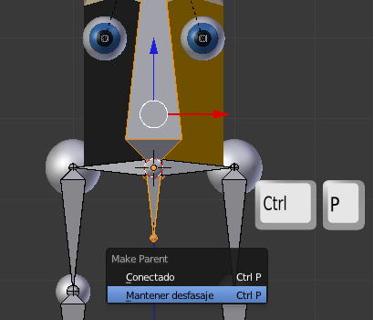

Cinemática directa
La mecánica restringida es un modo de cinemática en realidad. Si nos fijamos bien en el rigging que hemos hecho es posible pensar que no hubiera sido muy problemático hacerlo con mecánica restringida y una buena organización de Orígenes.
La cinemática se basa en que unos objetos se vean influidos por las transformaciones de otros pero usando huesos en lugar de los objetos en sí. La cinemática puede darse de dos modos distintos:
- Directa. Para que nos entendamos rápido: es la cinemática que hemos creado para las piernas del personaje Lapintef. Cuando rotamos femur.L esta transformación es heredada por tibia.L y pie.L. Es como cuando agarramos el muslo de un muñeco para que simule dar una patada.
- Indirecta. Supongamos un muñeco con articulaciones en un brazo (hombro, codo y muñeca). Si agarramos el cuerpo del muñeco dejándolo fijo mientras que con la otra desplazamos su mano, es seguro que todo el brazo sufrirá una transformación al mismo tiempo originando una nueva pose para todo los elementos.
La cinemática directa del personaje Lapintef tiene un defecto al rotar la cabeza, tal y como ya quedó dicho. Ha llegado el momento de solucionar ese problema, pero no podremos hacerlo usando sólo cinemática directa porque lo que necesitamos es que al girar el hueso cabeza, se desplace hacia abajo un hueso fémur mientras que el contrario se desplaza hacia arriba. Y todo ello mientras los pies se quedan en su sitio.
Pero no vamos a dejar pasar la ocasión sin mejorar un poco el rigging.
- En Modo Edición
 seleccionamos la cabeza del hueso cabeza para hacer Esqueleto/Adherencia/Cursor a seleccionado.
seleccionamos la cabeza del hueso cabeza para hacer Esqueleto/Adherencia/Cursor a seleccionado.
- Extruimos anclando el desplazamiento en Z ("EZ").
- Lo denominamos pivote y nos aseguramos de corregirle posibles rotaciones en el panel Hueso
 aunque parezca que no las hay.
aunque parezca que no las hay.
Este hueso pivote tiene que ser padre del hueso cabeza y de los dos huesos cadera. Así que seleccionamos cabeza, después pivote, emparentamos con "Control_P" y del menú emergente seleccionamos Mantener desfase o de lo contrario la cola de uno tendrá que coincidir con la cabeza del otro.
Repetimos esto mismo para los huesos cadera.L y cadera.R.
Siempre tiene que haber un hueso que sea el padre final y del que no dependan otras transformaciones. Como el hueso pivote será el encargado de mover toda la cadera del personaje hay que liberarle de la responsabilidad de ser el padre final.
Seleccionamos todo el hueso pivote en Modo Edición  y lo duplicamos desplazándolo después en Z ("Shift_D Z").
y lo duplicamos desplazándolo después en Z ("Shift_D Z").
Lo llamamos posicion y hacemos que pivote sea su hijo manteniendo el desfase según el método ya aprendido.